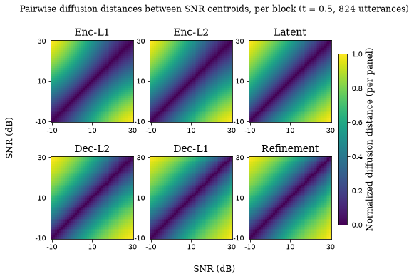
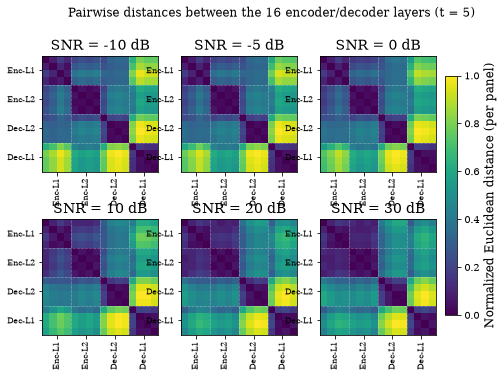

A geometric view: diffusion maps#
CKA is one scalar similarity. A diffusion map embeds the same centroid representations in a low-dimensional space whose Euclidean distances approximate random-walk distances on the data manifold, so it offers a second look at the depth-and-SNR structure of the earlier chapters that does not depend on the CKA estimator. The embeddings here come from the full 824-utterance sweep over the five held-out DEMAND environments (results_tables/diffusion/) and reproduce the paper’s section A Geometric View (Figs. 9–10), with every number asserted.
Runtime: under 30 seconds on any device.
import sys
from pathlib import Path
REPO = Path.cwd().resolve()
while REPO.name != "SE-Probe" and REPO.parent != REPO:
REPO = REPO.parent
if str(REPO) not in sys.path:
sys.path.insert(0, str(REPO))
def _rel(p):
"""Repo-relative path for display (absolute only if outside the repo)."""
try:
return p.relative_to(REPO)
except ValueError:
return p
from se_probe.device import device_info, get_device
from se_probe.plotting import apply_paper_rcparams
apply_paper_rcparams()
DEVICE = get_device()
print(device_info(DEVICE))
import pandas as pd
DATA_DIR = REPO / ("results_df" if (REPO / "results_df").exists() else "results_demo")
TABLES = REPO / "results_tables"
print(f"Using data from: {_rel(DATA_DIR)}")
print(f"Paper tables from: {_rel(TABLES)}")
Detected device: cpu
Using data from: results_demo
Paper tables from: results_tables
Across SNR, per block#
Two independent embeddings are used. In the per-block view, all 5 x 41 (environment, SNR) centroids of one block are embedded jointly at diffusion time t = 0.5, and the diffusion coordinates (the psi_* columns) are then averaged over environments per SNR, giving one 41-point trajectory per block. In the architecture view of the next section, the 16 encoder/decoder layers are embedded per SNR at the longer time t = 5, which smooths the random walk enough for the between-layer structure to dominate.
For each of the six representative layers (the first LayerNorm of each block) the 41 SNR centroids order perfectly along the sweep: the distance from the 30 dB reference grows monotonically as SNR decreases, with |rho| = 1.00 in every block. Magnitude is the more informative quantity: the centroids trace a monotone arc in the first two diffusion coordinates whose length is 3.03x larger for the decoder blocks than for the encoder blocks (0.193 against 0.064). The figure shows the SNR-by-SNR diffusion-distance matrix of each block (paper Fig. 9): encoder blocks show gradual gradients, decoder blocks transition more sharply and reach larger off-diagonal distances at low SNR.
import numpy as np
from se_probe.diffusion_analysis import (
BLOCK_NAMES,
REPRESENTATIVE_LAYERS,
arc_length_ratio,
block_statistics,
block_trajectory_from_psi,
)
psi = pd.read_parquet(TABLES / "diffusion/diffusion_maps_per_layer_t0.5_824_new5.parquet")
print(f"{len(psi):,} rows: {psi.layer.nunique()} layers x {psi.noise_name.nunique()} environments x {psi.snr.nunique()} SNR levels")
traj, rows = {}, []
for layer, name in zip(REPRESENTATIVE_LAYERS, BLOCK_NAMES):
snrs, M = block_trajectory_from_psi(psi, layer)
traj[name] = (snrs, M)
st = block_statistics(snrs, M)
rows.append({"block": name, **st})
per_block = pd.DataFrame(rows)
display(per_block.round(4))
ratio = arc_length_ratio(per_block)
print(f"min |rho| over the six blocks: {per_block.abs_rho.min():.4f} (paper 1.00)")
print(f"arc length: encoder {ratio['encoder_mean']:.3f}, decoder {ratio['decoder_mean']:.3f}, ratio {ratio['ratio']:.2f}x (paper 0.064, 0.193, 3.03x)")
assert np.allclose(per_block.abs_rho, 1.0, atol=5e-3)
assert abs(ratio["encoder_mean"] - 0.064) < 5e-4 and abs(ratio["decoder_mean"] - 0.193) < 5e-4 and abs(ratio["ratio"] - 3.03) < 5e-3
shipped = pd.read_csv(TABLES / "diffusion/IIIG2_per_block_new5.csv").set_index("block")
cmp_ = per_block.set_index("block")[["arc_len_2d", "abs_rho"]].join(shipped[["arc_len_2d", "abs_rho"]], rsuffix="_shipped")
print(f"max |d arc length| vs the shipped per-block table: {(cmp_.arc_len_2d - cmp_.arc_len_2d_shipped).abs().max():.1e}")
assert (cmp_.arc_len_2d - cmp_.arc_len_2d_shipped).abs().max() < 1e-6
1,230 rows: 6 layers x 5 environments x 41 SNR levels
| block | n_components | spearman_rho | abs_rho | monotone_strict | arc_len_2d | max_dist_from_ref | |
|---|---|---|---|---|---|---|---|
| 0 | Enc-L1 | 14 | -1.0 | 1.0 | True | 0.0325 | 0.0712 |
| 1 | Enc-L2 | 14 | -1.0 | 1.0 | True | 0.0948 | 0.0973 |
| 2 | Latent | 14 | -1.0 | 1.0 | True | 0.1292 | 0.1167 |
| 3 | Dec-L2 | 14 | -1.0 | 1.0 | True | 0.1830 | 0.1327 |
| 4 | Dec-L1 | 14 | -1.0 | 1.0 | True | 0.2027 | 0.1410 |
| 5 | Refinement | 14 | -1.0 | 1.0 | True | 0.2032 | 0.1412 |
min |rho| over the six blocks: 1.0000 (paper 1.00)
arc length: encoder 0.064, decoder 0.193, ratio 3.03x (paper 0.064, 0.193, 3.03x)
max |d arc length| vs the shipped per-block table: 8.3e-09
/tmp/ipykernel_2584/3785685957.py:28: Pandas4Warning: The 'lsuffix' and 'rsuffix' keywords in DataFrame.join are deprecated and will be removed in a future version. Use the 'suffixes' keyword instead.
cmp_ = per_block.set_index("block")[["arc_len_2d", "abs_rho"]].join(shipped[["arc_len_2d", "abs_rho"]], rsuffix="_shipped")
import matplotlib.pyplot as plt
from scipy.spatial.distance import cdist
fig, axes = plt.subplots(2, 3, figsize=(8.5, 5.4))
ticks = [0, 20, 40]
for ax, name in zip(axes.ravel(), BLOCK_NAMES):
snrs, M = traj[name]
D = cdist(M, M)
Dn = (D - D.min()) / (D.max() - D.min())
im = ax.imshow(Dn, origin="lower", cmap="viridis", vmin=0, vmax=1, interpolation="nearest")
ax.set_title(name)
ax.set_xticks(ticks)
ax.set_yticks(ticks)
ax.set_xticklabels([int(snrs[t]) for t in ticks])
ax.set_yticklabels([int(snrs[t]) for t in ticks])
fig.supxlabel("SNR (dB)")
fig.supylabel("SNR (dB)")
cb = fig.colorbar(im, ax=axes, shrink=0.8, pad=0.02)
cb.set_label("Normalized diffusion distance (per panel)")
fig.suptitle("Pairwise diffusion distances between SNR centroids, per block (t = 0.5, 824 utterances)");

Across layers, per SNR#
Fixing the SNR and embedding the 16 encoder/decoder layers (Enc-L1, Enc-L2, Dec-L2, Dec-L1) at t = 5 gives one layer-by-layer distance matrix per SNR (Fig. 10). Each panel is min-max normalised on its own, so the between-group contrast is a within-panel reading. group_distances returns the between-group and within-group mean distances of a panel.
The paper’s text makes three claims about these panels: (a) at low SNR the encoder layers cluster tightly among themselves and the largest distances occur between the encoder and decoder groups; (b) as SNR increases the inter-group distances shrink monotonically; (c) the layers with the largest slopes βℓ are the ones that move the most across the SNR panels. The shipped tables do not support those three sentences. The encoder layers do form the tighter cluster (the within-encoder mean is below the within-decoder mean at every SNR, asserted below), but the largest-distance pair is decoder_level2 against decoder_level1, a within-decoder pair, at every one of the 41 SNRs (frac_snr_where_max_pair_is_cross_group = 0.0 in diffusion_layers_summary.json). The between-group distance is not monotone in SNR: it falls through most of the sweep and then rises again, from 0.4660 at 20 dB to 0.4758 at 30 dB in the table below (Spearman ρ(SNR, between) = −0.56 over the 41 levels, not −1). And a layer’s slope βℓ is uncorrelated with how far it moves across panels (Pearson r = 0.0076). The figure is kept as drawn; what it shows is the tight encoder cluster and the sharper decoder transitions, not the three sentences above.
The shipped IIIG3_across_layers_new5.csv was computed from a re-embedding on the SCAFE environment set, so it differs from the stored architecture table (built on the earlier five) in the third decimal.
from se_probe.diffusion_analysis import BLOCK_ORDER, architecture_distance_matrices, group_distances
from se_probe.muse.consts import ARCHITECTURE_LAYERS
arch = pd.read_parquet(TABLES / "diffusion/diffusion_maps_architecture_t5_824.parquet")
Dm = architecture_distance_matrices(arch, ARCHITECTURE_LAYERS)
enc = [i for i, L in enumerate(ARCHITECTURE_LAYERS) if "encoder_" in L]
dec = [i for i, L in enumerate(ARCHITECTURE_LAYERS) if "decoder_" in L]
PANELS = [-10, -5, 0, 10, 20, 30]
rows = []
for s in PANELS:
g = group_distances(Dm[float(s)], enc, dec)
rows.append({"snr": s, "between": g["between"], "within_enc": g["within_a"], "within_dec": g["within_b"],
"between_over_within": g["between_over_within"]})
grp = pd.DataFrame(rows).set_index("snr")
shipped3 = pd.read_csv(TABLES / "diffusion/IIIG3_across_layers_new5.csv").set_index("snr").loc[PANELS]
grp["between_shipped_new5"] = shipped3.norm_between
display(grp.round(4))
print(f"max |d between| vs the SCAFE-set re-embedding: {(grp.between - grp.between_shipped_new5).abs().max():.4f}")
assert (grp.between - grp.between_shipped_new5).abs().max() < 5e-3
assert (grp.within_enc < grp.within_dec).all()
fig, axes = plt.subplots(2, 3, figsize=(8.5, 5.4))
tick_pos = [1.5, 5.5, 9.5, 13.5]
for ax, s in zip(axes.ravel(), PANELS):
D = Dm[float(s)]
M = (D - D.min()) / (D.max() - D.min())
im = ax.imshow(M, cmap="viridis", vmin=0, vmax=1, interpolation="nearest")
for p in (3.5, 7.5, 11.5):
ax.axhline(p, color="w", lw=0.5, ls=":")
ax.axvline(p, color="w", lw=0.5, ls=":")
ax.set_title(f"SNR = {s} dB")
ax.set_xticks(tick_pos)
ax.set_yticks(tick_pos)
ax.set_xticklabels(BLOCK_ORDER, rotation=90, fontsize=8)
ax.set_yticklabels(BLOCK_ORDER, fontsize=8)
cb = fig.colorbar(im, ax=axes, shrink=0.8, pad=0.02)
cb.set_label("Normalized Euclidean distance (per panel)")
fig.suptitle("Pairwise distances between the 16 encoder/decoder layers (t = 5)");
| between | within_enc | within_dec | between_over_within | between_shipped_new5 | |
|---|---|---|---|---|---|
| snr | |||||
| -10 | 0.5087 | 0.2085 | 0.5432 | 1.3537 | 0.5086 |
| -5 | 0.5051 | 0.1975 | 0.5433 | 1.3637 | 0.5049 |
| 0 | 0.4983 | 0.1786 | 0.5441 | 1.3790 | 0.4966 |
| 10 | 0.4810 | 0.1299 | 0.5452 | 1.4247 | 0.4778 |
| 20 | 0.4660 | 0.0959 | 0.5384 | 1.4693 | 0.4643 |
| 30 | 0.4758 | 0.0876 | 0.5360 | 1.5257 | 0.4747 |
max |d between| vs the SCAFE-set re-embedding: 0.0031

What the summary file records#
diffusion_layers_summary.json holds the same across-layer statistics over all 41 SNR levels at several diffusion times, plus the three checks behind the previous section: the fraction of SNRs at which the maximum-distance pair is cross-group (0.0), the Spearman correlation between SNR and the between-group distance (−0.56), and the correlation between a layer’s slope βℓ and its mobility across panels (Pearson 0.0076, Spearman −0.11). The paper’s section says that the largest distances fall between the two groups, that the inter-group distances shrink monotonically with SNR, and that the largest-slope layers move the most, and then describes the agreement between the regression and the geometric view as a consistency check across similarity measures rather than independent evidence. At 824 utterances and t = 5 the summary file contradicts the three specific sentences. What it does support is weaker: the encoder layers form a tighter cluster than the decoder layers at every SNR, and the between-group mean exceeds the within-group mean throughout (the file’s low-SNR and high-SNR between/within ratios are 1.36 and 1.51), which is a depth partitioning of the same kind the regression profile shows.
import json
summ = json.load(open(TABLES / "diffusion/diffusion_layers_summary.json"))
pd.Series(summ["824"]["5"]).to_frame("824 utterances, t = 5").round(4)
| 824 utterances, t = 5 | |
|---|---|
| lowSNR_within_enc | 0.0000 |
| lowSNR_within_dec | 0.0001 |
| lowSNR_between | 0.0001 |
| lowSNR_between_over_within | 1.3582 |
| frac_snr_where_max_pair_is_cross_group | 0.0000 |
| spearman_snr_vs_between | -0.5650 |
| highSNR_between_over_within | 1.5079 |
| pearson_beta_vs_mobility | 0.0076 |
| spearman_beta_vs_mobility | -0.1059 |